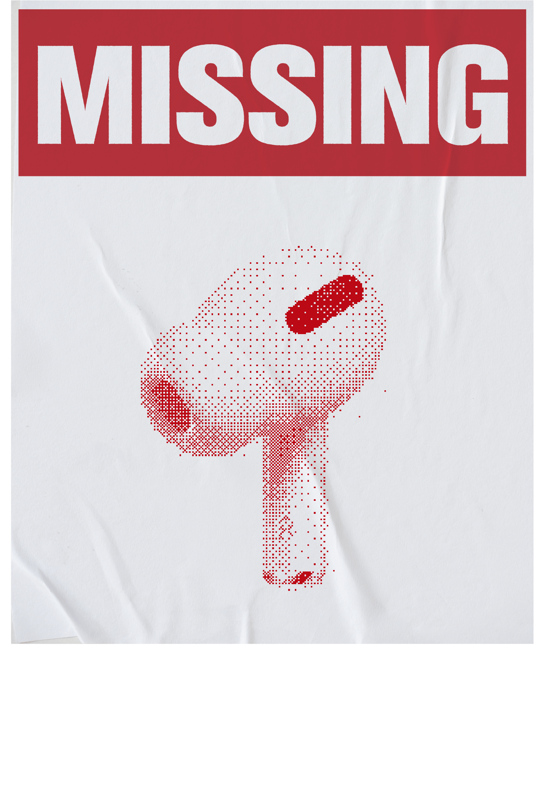
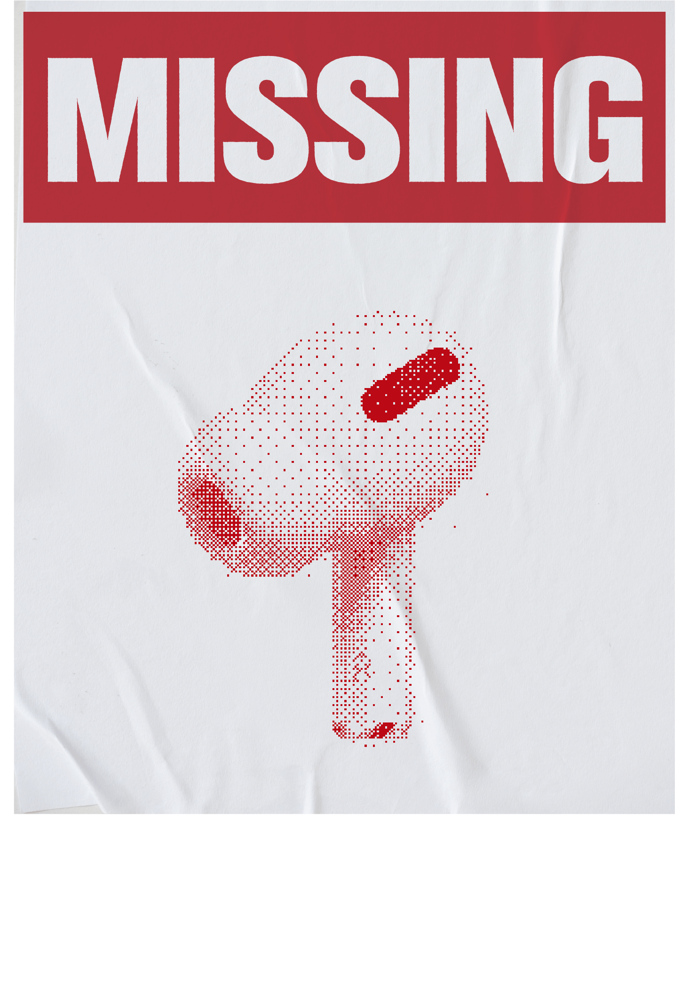
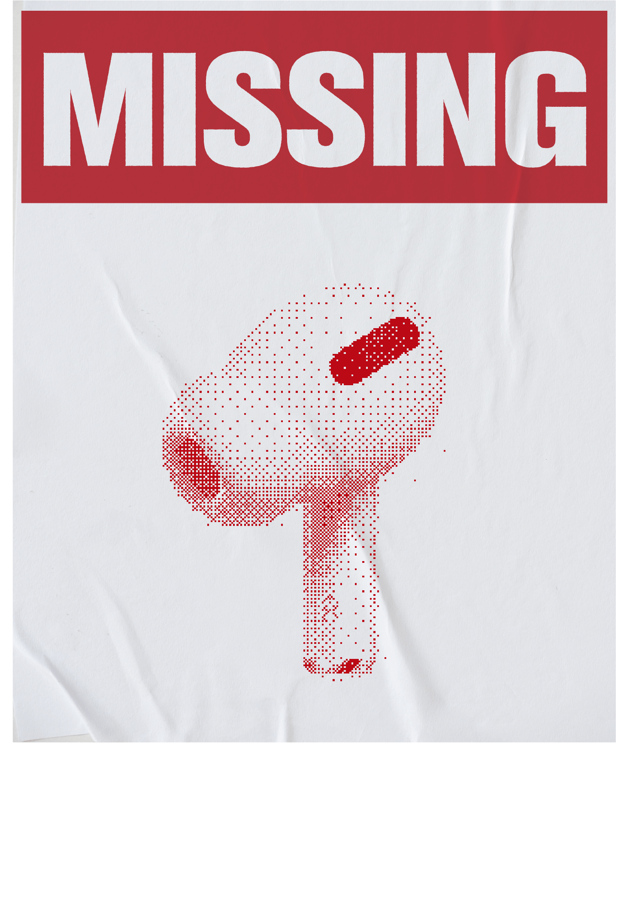
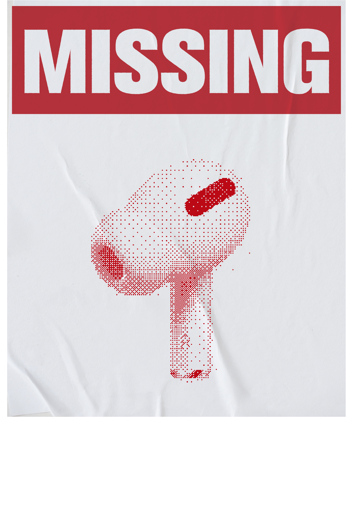

FINDING MY MISSING HALF


 



 

MISSING MISSING MISSING MISSING MISSING MISSING MISSING MISSING MISSING MISSING MISSING MISSING MISSING MISSING MISSING MISSING MISSING MISSING MISSING MISSING MISSING MISSING MISSING MISSING MISSING MISSING MISSING MISSING MISSING MISSING MISSING MISSING MISSING MISSING MISSING MISSING
당신의 소중한 물건을 잃어버렸나요?
분실한 물건의 한 쪽을 가지고 있으면서도
나머지 한 쪽은 찾을 수 없는 절망감에 괴로우셨던 경험, 있으시죠?
"반쪽찾기 프로젝트"는 바로 이러한 감정을 해소하기 위해 만들어진
서비스입니다.
당신이 잃어버린 물건의 반쪽을 가지고 있는 사람들을 찾아보세요.